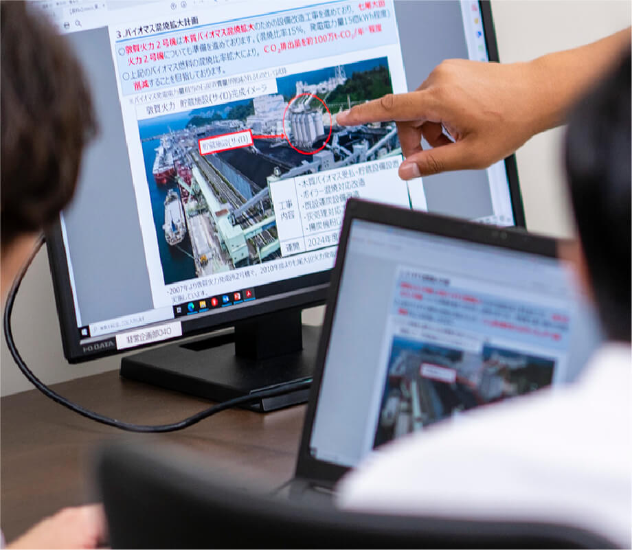
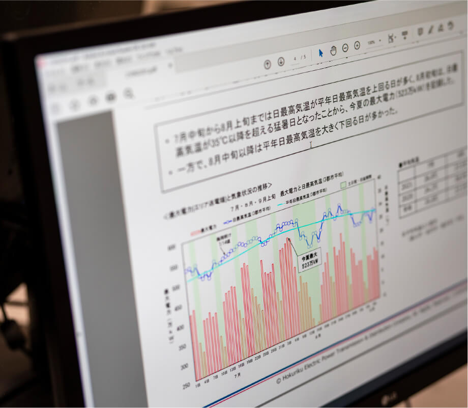

原子力発電所の停止による厳しい電力需給や収支状況が続く中、脱炭素の潮流やDXの進展、国際情勢不安を背景とした世界的な資源・エネルギー価格の高騰など、当社グループを取り巻く事業環境は大きく変化しています。
このような状況のもと、当社グループが「低廉で良質なエネルギーを安定的にお届けする」という社会的使命を果たしつつ、地域の発展とともに持続的に成長するための戦略や諸計画を策定することが経営企画部門の主な役割です。その業務内容は多岐に亘ります。国内外の電気事業やエネルギー政策に係る情報の収集・整理を行い、必要な分析や基本方針の策定を行う「経営企画」、当社グループが目指すべき経営の方向性やその実行計画としての長期ビジョンや経営方針、経営計画の策定やグループ大でのCSR活動の推進を行っている「経営計画・CSR」等、日々業務に取り組んでいます。
経営企画部 経営企画チーム 兼 経営分析チーム奥村 俊輔
入社 / 2007年
経済学部卒業
2019年7月 経営企画部 経営企画チーム 副課長
2021年7月 経営企画部 経営企画チーム 副課長 兼 経営分析チーム 副課長
経歴は取材時点のものです
 歩んできたキャリアは？
歩んできたキャリアは？
大学時代は北陸を離れていましたが、自分の人生をどこで誰とどのように過ごしたいかを考え抜いた末、北陸で働くことに決め、Uターン就職をしました。電気を専攻していたわけでもなく、電力業界で働くイメージはありませんでしたが、北陸の経済や生活を支えるやりがいに魅力を感じ入社。用地交渉、人事制度改定、採用など多様な業務を経験し、その後は経営企画部門へ。経営分析、新市場やエネルギー・環境政策への対応方針策定を担ってきました。入社して約15年の月日の中、エネルギー事業の目まぐるしい変化に直接触れながら、さまざまな部門のメンバーと走り続けてきたのが私のキャリアです。
 現在の仕事、
現在の仕事、
プロとして意識していることは？
2050年のカーボンニュートラル達成には、原子力の活用や火力の脱炭素化、再生可能エネルギーの導入拡大が不可欠です。そのためには非化石価値取引市場や容量市場などの新たに創設された市場の活用が必要であり、私は当社の対応方針や取引戦略、またエネルギー基本計画等の政策・法令関連の対応方針策定に携わっています。日々の業務では、日本のエネルギー政策の大きな動きをリアルタイムで直接感じられる機会が多くあり、国会等で首相や大臣から新たな政策や方針が発表された数時間後には社内関係メンバーを集めて対応方針について打合せを行うといったこともありました。そのような重大かつスピードが求められる業務に対応する際には、世の中の変化の兆しをいち早く察知するための情報収集に加え、その先に想定される当社にとっての課題や対応策を常に自ら考えておくことを心がけています。

 これから挑みたいことは？
これから挑みたいことは？
日本には電気事業者が多数ありますが、北陸地域に根ざし、水力発電等の再生可能エネルギーの導入拡大に非常に積極的に取り組んできたのが当社の特徴です。少し大げさな表現になってしまいますが、私の目標は、日本・世界のエネルギー業界で北陸地域を基盤に存在感を発揮していくことです。世界の潮流を見極めながら、北陸電力独自のビジョンをこの北陸地域から発信していきたいと考えています。
 学生へメッセージを
学生へメッセージを
2050年のカーボンニュートラル達成に向け、大きなエネルギー制度改革が想定される中で、電気の果たす役割は今後さらに大きくなっていきます。電力会社は、以前は安定的な業界とされることもありましたが、今後は事業規模・範囲の拡大や大きな事業変革の可能性が大きくなっています。電気事業、北陸地域を起点に、全国・全世界へ新たな独自の価値を生み出していく、そんな姿勢に共感できる方は、ぜひ一緒に働いてみませんか。

新市場への入札方針検討
社内関係者を集め、非化石価値取引市場での入札方針を議論。取引規模が大きい当市場におけるメリット・デメリットを慎重に比較評価したうえで、方針を策定していきます。
エネルギー政策の動向調査
日本や各国のエネルギー政策・方針は当社の事業運営にも大きな影響を及ぼします。日頃から国内外の動向を情報収集し、当社としての対応を考えていきます。
環境政策についての法令対応相談
エネルギー基本計画やエネルギー供給構造高度化法といった環境政策・法令について、社内の様々な部署から相談を受けます。法令に沿って適切に対応するのはもちろん、当社の成長へ繋がるような提案ができるよう心掛けています。
新市場についての定量分析
非化石価値取引市場や容量市場等、新たに創設された市場での取引について、当社に及ぼす影響を定量的なシミュレーションし、対応方針を策定していきます。
経営企画部 分析チーム三浦 颯人
入社 / 2015年
経済学部卒業
現在に至るまでの経歴
2015年5月 お客さまサービスセンター
2016年3月 経営企画部 経営企画チーム 兼 CSR推進チーム
2017年4月 経営企画部 経営分析チーム
2021年2月 北陸電力送配電株式会社 経営企画部 分析チーム
経歴は取材時点のものです
 入社動機は？
入社動機は？
大学で地元を離れたことで、北陸の暮らしやすさを強く感じ、将来は地元に戻って就職しようと考えていました。その中でも、規模が大きく、様々な分野の業務に挑戦できるチャンスがあると思い、北陸電力を志望しました。実際に入社してみても、業務は幅広く、変革期にある電力業界のダイナミズムを日々感じています。また、就職活動の中で当時の採用担当者の人柄の良さに惹かれたことも、入社の後押しとなりました。

 現在の仕事、その魅力は？
現在の仕事、その魅力は？
電力システム改革により、これまで北陸電力が一貫して担ってきた「発電」「送配電」「小売」部門のうち、「送配電」部門が別会社化され、北陸電力送配電が誕生しました。送配電の使命は、電気を安定的にお届けすることであり、電気を送り届けるための料金（託送料金）は、公共性および透明性確保の観点から国の認可を受けています。高度経済成長期に整備された送配電網設備更新工事の増加や再生可能エネルギーの主力電源化、激甚化する自然災害への対応が必要となる中で、2023年度に新しい託送料金制度の導入が予定されています。現在、私は、この新しい制度導入に向けた対応で、日本のエネルギー政策のもと北陸電力送配電の事業方針を検討し、社内外とのやり取りを進める役割を担っています。エネルギー業界を取り巻く大きな潮流の中で、将来の当社のあり方と地域の未来を導いていく責務ある業務なので、大きな使命とやりがいを感じています。
 これからの目標は？
これからの目標は？
入社2年目から今に至るまで、経営層と距離の近い環境の中で多様な経験をしてきました。経営計画の策定、中長期収支算定、料金改定対応など、重要な業務を任された際には、プレッシャーを感じながらも、日々の中に自らの成長を実感できました。経営陣やステークホルダーを見据えた業務の中で感じたのは、北陸電力グループは地域とともに成長・発展してきた企業であり、これからもその姿勢を保ち続けなければならないことです。会社全体の方針策定等に関わっているからこそ、今一度、北陸電力グループのあり方を考え、より地元北陸に根ざす価値ある企業の姿をつくっていきたいと思います。
 学生へメッセージを
学生へメッセージを
電力会社は変化の少ないビジネスではなく、時代に合わせて絶えずその姿を変え続ける会社だと、北陸電力グループで働く日々の中で身をもって実感しました。北陸電力グループでは、従来の電気事業だけでなく、電気事業以外の新規事業にも積極的に挑戦できる環境があります。ぜひ、ともに挑戦・成長していきましょう。

- 8:40
-
出社、メールチェック
天気の良い日は自転車で通勤。経営企画業務では社内や省庁など関係各所とのやり取りが多く、スピード感をもって迅速に対応していきます。
- 10:00
-
資料確認・チーム打合せ
午後からの会議に向けて事前に資料の確認等を行います。上司や先輩とも相談し、チームとしての考え方・スタンス等を認識共有します。
- 12:00
-
デスクワークの合間の
気分転換・ランチ休憩デスクでは打ち合わせに向けた資料作成や分析作業を行うことが多いため、昼休みはリフレッシュを兼ねて会社近くの環水公園に出向くことがよくあります。
- 13:00
-
社内ワーキンググループ会議
への参加新託送料金制度導入に向けた社内ワーキンググループ会議にて、安定供給、再生可能エネルギー拡大、サービスレベル向上など分野ごとの目標設定・事業計画の検討を行います。私が所属する分析チームはすべての会議に参加し、全体を統括します。
- 16:00
-
分析作業・チーム打合せ、退社
ワーキンググループにおける事業計画・施策案をもとに、将来の送配電事業運営に必要なコスト算定・分析作業を実施します。実施可否、事業計画に盛り込むかなどの判断をチーム内議論。その後、フレックスタイム制度を利用し早めに退社しました。